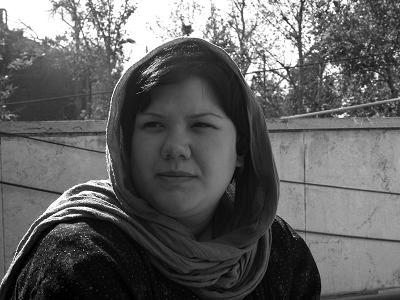

ساعت حوالی 10 صبح بود. باید برای گرفتن جواب آزمایش یکی از بچه های خانه کودک به کلینیکی به میدان خراسان میرفتم.
به مقصد که رسیدم درست همان جای قبلی نشسته بود و همانطور چادرش را روی صورتش کشیده بود. مثل دفعه قبل بچه کوچکی روی پاهایش به خواب رفته بود. از دستهایش میشد حدس زد که جوان است. دفعه گذشته هم که برای انجام آزمایش آمده بودیم او را در همینجا و همینطور دیده بودم. برایم عجیب بود. معمولاً کسی برای گدایی کردن محلهای چنین فقیرنشین و پیادهرویی به این خلوتی را انتخاب نمیکند. کمی این پا و آن پا کردم و به سمت کلینیک رفتم. در قسمت دریافت جواب آزمایش، مرد بداخلاقی مسئول تحویل گفت: «مگر نگفته بودم ظهر بیایید؟» چند ثانیه فکرکردم و آرام گفتم: «خیر، چیزی نفرموده بودید. روی برگه هم فقط تاریخ زده ساعت نه. معمولاً هم برای گرفتن جواب آزمایش صبحها مراجعه میکنند.» با عصبانیت گفت: «حالا که حاضر نیست، 12 زودتر هم جواب نمیدهیم.» اگر چیزی در ذهنم دور نمیزد، قطعاً خیلی عصبانی میشدم، اما خیلی خونسرد گفتم:« بسیار خوب» و از کلینیک بیرون زدم. سریع خودم را به محلی رساندم که دقایقی پیش از تاکسی پیاده شده بودم. هنوز آنجا نشسته بود با همان وضع سابق. آرام رفتم و دو زانو کنارش نشستم و به دیوار تکیه دادم. گفتم: «جای خوبی ننشستی. هم پیاده روی خلوتیه و هم آفتاب مستقیم رو صورت خودت و بچه افتاده. چرا جاتو عوض نمی کنی؟ یک پیاده روی شلوغتر یا جایی که لااقل سایه باشد.»
دستم را نزدیک بردم و دستی روی سر بچهای که روی پایش خوابیده بود کشیدم و گفتم: «پخت این بچه. اینو از سرش وا کن.» آرام بند کلاه نخی را که زیر چانه بسته شده بود باز کردم و کلاه را درآوردم. سر بچه خیس عرق شده بود. پرسیدم: «بچه خودته؟» زن حتی یک کلمه هم نگفت، تکان هم نخورد. چند دقیقهای در سکوت گذشت. دوباره پرسیدم: «تنهایی؟» چند لحظه سکوت کرد. داشتم مطمئن میشدم که به حرفهایم جوابی نخواهد داد که صدای آرامی از زیر چادر کهنهاش به گوشم رسید. درست نمی شنیدم چه میگوید، سرم را بردم نزدیکتر و گفتم: «اگر با خودت حرف میزنی که هیچ، ولی اگر با من حرف میزنی چادرتو بالا بزن تا بشنوم چی میگی. صدات این زیرها گم می شه.» آرام دستم را به سمت چادرش بردم و لبه چادر را که روی صورتش کشیده بود پس زدم. هیچ اعتراضی نکرد. جا خوردم. دختر بچهای به نظر میرسید با چهرهای کاملاً تکیده و خسته. چند دقیقهای نگاهمان بر هم ثابت ماند. چشمانش عمق داشت. عمقی به اندازه تمام آنچه بر او رفته بود. چهره تکیدهاش ناگفته گواه سختیهای بسیار بود.
آرام گفت: «تنهای تنها که نه. شوهر دارم. سربازه و صبحهای زود میره سربازی و شبها بر میگرده، ولی خوب نمیتونه کار کنه. منم برا همین گدایی میکنم.»
گفتم: «تهران کسی رو داری؟» گفت: «بله، خانوادههامون، ولی اونا از پس خرج خودشونم بر نمیان. منم به کسی چیزی نمی گم. فکر میکنن تو یه تولیدی کار میکنم، برا همین صورتمو میبندم، شاید آشنایی از این جا رد شه.» پرسیدم: «چه کجایی؟ خونت نزدیکه» گفت: «نه، دروازه غار میشینیم.»
بچه شروع به گریه کرد و ناگهان طوری چهره دختر در هم رفت که گویا مسئلهای پیش آمده که از حل آن عاجز است. تلخ گفت: «بازم گریه میکنه، گرسنشه و منم شیر ندارم. از صبح هم که پولی جمع نکردم.» و بعد حرف را عوض کرد: «تو کی هستی؟ چرا اومدی کنار خیابون پیش من نشستی؟ خبرنگاری؟»
لبخند زدم و دوباره نگاهم به نگاهش گره خورد. «نه اومده بودم جواب آزمایش یکی از بچهها رو بگیرم. من مددکارم. جواب آزمایش مال یکی از بچههای مرکزیه که من کار میکنم. یه خانه کودک مخصوص بچههاس. گفتن آزمایش حاضر نیست، اومدم بیرون و گفتم چند دقیقهای پیش تو بشینم.» نگاهم کرد و سرش را تکان داد. به نظر نمیرسید حرفهایم را باور کرده باشد. بلند شدم و به او اشاره کردم که برای گرفتن جواب آزمایش میروم. وارد کلینیک که شدم اول به سمت داروخانه رفتم و یک قوطی شیر خشک خریدم، جواب آزمایشها را از مرد بداخلاق گرفتم و دوباره به سمت پیادهرو بازگشتم. به او که رسیدم دولا شدم شیر خشک را روی چادرش گذاشتم. این بار خودش لبه چادر را بالا زد و نگاهی به من انداخت و گفت: «خدا عمرت بده، داشتم فکر میکردم چطوری این بچه رو سیر کنم، این بچه از بس آب قند خورد مرد.» همانطور که حرف میزد من برای بچه شکلک در میآوردم و بچه میخندید. از او پرسیدم: «اسمش چیه؟» «سمیه.» گفتم: «اسم خودت چیه؟» «معصومه.» و در حقیقت معصوم بود.
جواب آزمایشها دستم بود. آنها را به او نشان دادم تا مطمئنتر شود و گفتم: «جوابشونو گرفتم تا دکتر نرفته باید جوابها رو پیشش ببرم.» لبخند زد. چند قدم جلوتر رفتم، برگشتم و نگاهش کردم و بلند گفتم: « همیشه همین جایی؟» سرش را به علامت تأًیید تکان داد و من ادامه دادم: «امیدوارم دوباره ببینمت.»
چند روز فکر کردم تا توانستم در یک کارگاه بستهبندی حوالی میدان شوش برایش کاری پیدا کنم که با 8 ساعت کار روزانه ماهی 75 هزار تومان به او حقوق بدهند. به نظرم حقوق کمی بود ولی از گدایی کردن بهتر بود. روز سوم که برگشتم او را همانجای همیشگی دیدم. یک قوطی شیر خشک خریده بودم. آن را روی چادرش گذاشتم و خم شدم تا سمیه را از روی پایش بردارم. لبه چادرش را بالا زد و در حالی که سمیه را بغل کرده بودم، با لبخند نگاهش کردم. گویی یک بچه سرخوش 9-8 ساله است. نگاهی به قوطی شیر خشک انداخت و گفت: «باز هم برای آزمایش اومدی؟» خندیدم و گفتم: «نه، این بار اومدم معصومه و سمیه را ببینم.» لحظهای سکوت کرد و بعد چهرهاش در هم رفت و پرسید: «کاری داری؟» تعجب نکردم، طبیعی بود که دوباره شک کرده باشد. آرام گفتم: «کار خاصی که نه، ولی شاید اگر بخواهی بتونم کاری برات دست و پا کنم.» گفت: «چه کاری؟» «بستهبندی در یک کارگاه.» هیچ نگفت. ادامه دادم: « البته هنوز قطعی نیست. من باید ضمانت این کارو بکنم و باید تو رو بهتر بشناسم.» سرش را بلند کرد و طوری نگاهم کرد که از خودم بدم آمد. با خودم فکر کردم چه میگویم؟ از راه رسیدهام و از او می خواهم که برای یک ضمانت ساده همه چیز زندگیاش را بگوید.
گفت: «چی میخوای بدونی؟ اسمم معصومس و شوهرم سربازه و از ناچاری گدایی میکنم.» (عصبانی به نظر میرسید) گفتم: «معصومه نمیخوام برای ماهی 75 هزار تومن عذابت بدم، متهمات کنم یا... ولی چند روزیه به تو فکر میکنم که چطور با این مخارج سنگین زندگیتو میگذرونی.» سکوت کرد. چند دقیقهای که گذشت ادامه دادم: «معصومه من میخواستم کمکی بکنم، کمکی نه در حد آوردن یک قوطی شیر خشک، کمکی که شاید کمی وضع تو رو سر و سامون بده.» سکوت او ادامه پیدا کرد. اینبار که حرف زد انگار صدایش را نمیشناختم. صدایش محکمتر بود. بلند و تلخ. گفت: «من روزا گدایی میکنم، ساعت 3 بعد از ظهر که شوهرم از سربازی میاد – اون سرباز فراری بود و دستگیرش کردن _ برام مشتری میآره. با بعضیها میرم خونههاشون و با بعضی به خرابههای اطراف. فکر میکنی از صبح تا عصر چقدر درمیآرم. حتی اون قدر نیس که سمیه سیر شه. بعد از ظهرها از هر کسی که بیاد 500 تومن میگیرم.»
خشکم زد. سرم داغ شد. چند بار پلک زدم. انگار به گوشهایم شک داشتم. حرفهایش را تکرار کردم: از هر نفر 500 تومن. بدنم سست شد: « معصومه با خودت چیکار میکنی؟ همخوابگی برای 500 تومن؟ میدونی نرخ معمولی کاری که میکنی حتی تو فقیرترین محلهها هم این قدر نیست؟» نگاهم کرد. نگاهش گنگ بود. آرام گفت: «نمیدونم. قبلا که این کاره نبودم. حالا هم رضا مشتریها رو میآره. من با کسی طرف حساب نمیشم. رضا برا هر نفر 500 تومن به من میده. کرایه خونه هم با خودشه.»
گفتم: «به 500 تومن راضیای؟» مکث کرد. زل زد به چشمانم و گفت: «سمیه گرسنس و منم شیر ندارم. بچه شیر میخواد.» هر دو سکوت کردیم. سرم تیر میکشید: «چند سالته؟» گفت: «پونزده سال». به طرز احمقانهای یاد کارگاه بستهبندی افتادم. معصومه هنوز جزو قانون منع کار کودکان بود. لبخند تلخی روی لبم نشست. میدانستم قضیه پیچیدهتر از آن است که فکر میکردم، رضا نخواهد گذاشت زنش در یک کارگاه کار کند، روزی 8 ساعت برای 75 هزار تومان!
بلند شدم و به معصومه اطمینان دادم که برمیگردم. به او گفتم: «باید با رئیس کارگاه صحبت کنم. تو هم خوب فکراتو بکن.» من هم باید خوب فکر کنم. فکر راضی کردن رئیس کارگاه، فکر خلاصی از شر رضا، فکر سمیه که هنوز 7 ماهه است. فکر معصومه که دارد ذره ذره آب میشود و خیلی فکرهای دیگر.
سه روز بعد برگشتم. صاحب کارگاه راضی شده بود. هم برای کار معصومه و هم برای سمیه که در کنار مادرش بماند. تمام راه را به کارهایی که باید بکنم فکر میکردم. به تصمیم معصومه و به ادامه زندگیاش بدون رضا.
صدای راننده مرا به خود آورد: «یدون خراسون.»
پیاده شدم. قدمهایم سست شد. معصومه نبود. نه در جای همیشگی و نه حتی در شعاع چند کیلومتری. تک تک کوچههای محله را بارها و بارها پیمودم. تا مدتها هر چند وقت یکبار به میدان خراسان رفتم، تا شاید او را دوباره بیابم. اما دیگر هرگز او را ندیدم. معصومه دیگر هرگز پیدا نشد اما یک سئوال برای همیشه باقی است. سمیه هر روز بزرگتر میشود و دیگر با روزی 500 یا 1000 تومان راضی نمیشود. سمیه باید درس بخواند و مدرسه برود و زندگی کند. (کارهایی که حتما دلش میخواست انجام دهد).آیا معصومه هر روز باید سهم بیشتری از وجودش را بفروشد؟ حتما رضا فکر کرده بود که به نفعش نیست که معصومه کار بهتری پیدا کند. یک کار دائم با روزی 8 ساعت کار. معصومه داشت مستقل میشد و این چیزی نبود که رضا بخواهد.
حوالی میدان خراسان و دروازه غار و... تعداد زیادی از این زنان را میتوان دید، زنانی که اگر چند باری دور و برشان بگردی قطعا صاحب کارشان جایشان را عوض خواهد کرد.
نامه زن، ش 4، اسفند 1384